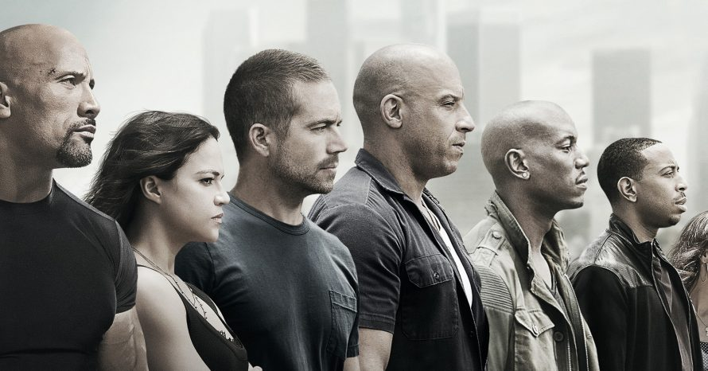

Em Velozes & Furiosos 9, Dominic Toretto (Vin Diesel) e Letty (Michelle Rodriguez) vivem uma vida pacata ao lado de seu filho Brian. Mas eles logo são ameaçados pelo passado de Dom: seu irmão desaparecido Jakob (John Cena). Trata-se de um assassino habilidoso e motorista excelente, que está trabalhando ao lado de Cipher (Charlize Theron), vilã de Velozes & Furiosos 8. Para enfrentá-los, Toretto vai precisar reunir sua equipe novamente, inclusive Han (Sung Kang), que todos acreditavam estar morto.
